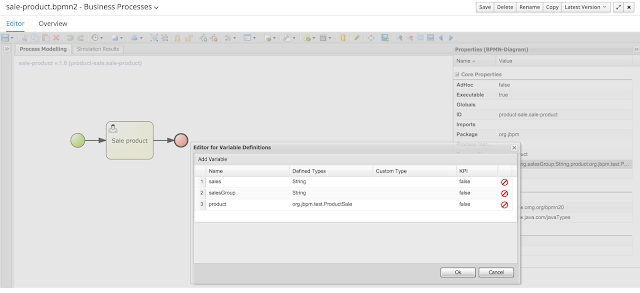
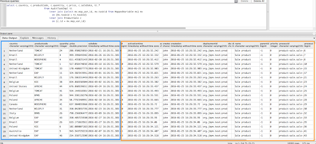

Advanced queries in jBPM 6.4
- process instances started by…
- process instances not completed until…
- tasks assigned to … for a given project
- tasks not started for a given amount of time
- process instances with given process variable(s)
- tasks with given task variable(s)
- different data bases have different capabilities when it comes to efficient searches
- ORM in between adds layer of complexity while it helps to mitigate db differences
- out of the box solution relies on compile time data – that can be used in queries – like jpa entities
- not possible to build data structure that will fit all cases and that will be efficient to query on
What’s new in 6.4?
- Management operations
- register query definition
- replace query definition
- unregister query definition
- get query definition
- get queries
- Runtime operations
- query – with two flavors:
- simple based on QueryParam as filter provider
- advanced based on QueryParamBuilder as filter provider
How to use it?
String productCode
String country
Double price
Integer quantity
Date saleDate

As you can see the process is very simple but aims at doing few important things:
- make use of both processes and user tasks
- deals with custom data model as process and user task
- allows to store externally process and task variables (here as JPA entity)
Define query definitions
SqlQueryDefinition query = new SqlQueryDefinition("getAllProcessInstances", "java:jboss/datasources/ExampleDS");
query.setExpression("select * from processinstancelog");
queryService.registerQuery(query);
- constructor takes
- a unique name that identifies it on runtime
- data source JNDI name used when performing queries on this definition – in other words source of data
- expression – the most important part – is the sql statement that builds up the view to be filtered when performing queries
Perform basic queries
Collection<ProcessInstanceDesc> instances = queryService.query("getAllProcessInstances", ProcessInstanceQueryMapper.get(), new QueryContext());
What happened here…
- we referenced the registered query by name – getAllProcessInstances
- we provided ProcessInstanceQueryMapper that will be responsible for mapping our data to object instances
- we provided default query context that enables paging and sorting
QueryContext ctx = new QueryContext(0, 100, "start_date", true);
Collection<ProcessInstanceDesc> instances = queryService.query("getAllProcessInstances", ProcessInstanceQueryMapper.get(), ctx);
here we search the same query definition (data set) but we want to get 100 results starting at 0 and we want to have it with ascending order by start date.
But that’s not advanced at all… it just doing paging and sorting on single table… so let’s add filtering to the mix.
// single filter param
Collection<ProcessInstanceDesc> instances = queryService.query("getAllProcessInstances", ProcessInstanceQueryMapper.get(), new QueryContext(), QueryParam.likeTo(COLUMN_PROCESSID, true, "org.jbpm%"));
// multiple filter params (AND)
Collection<ProcessInstanceDesc> instances = queryService.query("getAllProcessInstances", ProcessInstanceQueryMapper.get(), new QueryContext(),
QueryParam.likeTo(COLUMN_PROCESSID, true, "org.jbpm%"),
QueryParam.equalsTo(COLUMN_STATUS, 1, 3));
here we have filtered our data set:
- first query – by process id that matches “org.jbpm%”
- second query – by process id that matches “org.jbpm%” and status is in active or aborted
but that’s still not very advanced, isn’t it?? Let’s look at how to work with variables.
Perform queries with process and task variables
Common use case is to find process instances or tasks that have given variable or have given variable with particular value.
jBPM from version 6.4 indexes task variables (and in previous versions it already did that for process instance variables) in data base. The indexation mechanism is configurable but default is to simple toString on the variable and keep it in single table:
- Process instance variables – VariableInstanceLog table
- Task variables – TaskVariableImpl table
// process instances with variables
SqlQueryDefinition query = new SqlQueryDefinition("getAllProcessInstancesWithVariables", "java:jboss/datasources/ExampleDS");
query.setExpression("select pil.*, v.variableId, v.value " +
"from ProcessInstanceLog pil " +
"INNER JOIN (select vil.processInstanceId ,vil.variableId, MAX(vil.ID) maxvilid FROM VariableInstanceLog vil " +
"GROUP BY vil.processInstanceId, vil.variableId ORDER BY vil.processInstanceId) x " +
"ON (v.variableId = x.variableId AND v.id = x.maxvilid )" +
"INNER JOIN VariableInstanceLog v " +
"ON (v.processInstanceId = pil.processInstanceId)");
queryService.registerQuery(query);
// tasks with variables
query = new SqlQueryDefinition("getAllTaskInputInstancesWithVariables", "java:jboss/datasources/ExampleDS");
query.setExpression("select ti.*, tv.name tvname, tv.value tvvalue "+
"from AuditTaskImpl ti " +
"inner join (select tv.taskId, tv.name, tv.value from TaskVariableImpl tv where tv.type = 0 ) tv "+
"on (tv.taskId = ti.taskId)");
queryService.registerQuery(query);
now we have registered new query definitions that will allow us to search for process and task and return variables as part of the query.
NOTE: usually when defining query definitions we don’t want to have always data set to be same as the source tables so it’s good practice to initially narrow down the amount of data for example by defining it for given project (deploymentId) or process id etc. Keep in mind that you can have query definitions as many as you like.
Now it’s time to make use of these queries to fetch some results
Get process instances with variables:
List<ProcessInstanceWithVarsDesc> processInstanceLogs = queryService.query("getAllProcessInstancesWithVariables", ProcessInstanceWithVarsQueryMapper.get(), new QueryContext(), QueryParam.equalsTo(COLUMN_VAR_NAME, "approval_document"));
So we are able to find process instances that have variable called ‘approval_document’…
Get tasks with variables:
List<UserTaskInstanceWithVarsDesc> taskInstanceLogs = queryService.query("getAllTaskInputInstancesWithVariables", UserTaskInstanceWithVarsQueryMapper.get(), new QueryContext(),
QueryParam.equalsTo(COLUMN_TASK_VAR_NAME, "Comment"),
QueryParam.equalsTo(COLUMN_TASK_VAR_VALUE, "Write a Document"));
… and here we can find tasks that have task variable ‘Comment’ and with value ‘Write a Document’.
So a bit of a progress with more advanced queries but still nothing that couldn’t be done with out of the box queries. Main limitation with out of the box variables indexes is that they are always stored as string and thus cannot be efficiently compared on db side like using operators >, < between, etc
… but wait with query definitions you can take advantage of the SQL being used to create your data view and by that use data base specific functions that can cast or convert string into different types of data. With this you can tune the query definition to provide you with subset of data with converted types. But of course that comes with performance penalty depending on the conversion type and amount of data.
So another level of making this use case covered is to externalize process and task variables (at least some of them that shall be queryable) and keep them in separate table(s). jBPM comes with so called pluggable variable persistence strategies and ships out of the box JPA based one. So you can create your process variable as entity and thus it will be stored in separate table. You can then take advantage of mapping support (org.drools.persistence.jpa.marshaller.VariableEntity) that ensures that mapping between your entity and process instance/task will be maintained.
Here is sample ProductSale object that is defined as JPA entity and will be stored in separate table
@javax.persistence.Entity
public class ProductSale extends org.drools.persistence.jpa.marshaller.VariableEntity implements java.io.Serializable
{
static final long serialVersionUID = 1L;
@javax.persistence.GeneratedValue(strategy = javax.persistence.GenerationType.AUTO, generator = "PRODUCTSALE_ID_GENERATOR")
@javax.persistence.Id
@javax.persistence.SequenceGenerator(name = "PRODUCTSALE_ID_GENERATOR", sequenceName = "PRODUCTSALE_ID_SEQ")
private java.lang.Long id;
private java.lang.String productCode;
private java.lang.String country;
private java.lang.Double price;
private java.lang.Integer quantity;
private java.util.Date saleDate;
public ProductSale()
{
}
public java.lang.Long getId()
{
return this.id;
}
public void setId(java.lang.Long id)
{
this.id = id;
}
public java.lang.String getProductCode()
{
return this.productCode;
}
public void setProductCode(java.lang.String productCode)
{
this.productCode = productCode;
}
public java.lang.String getCountry()
{
return this.country;
}
public void setCountry(java.lang.String country)
{
this.country = country;
}
public java.lang.Double getPrice()
{
return this.price;
}
public void setPrice(java.lang.Double price)
{
this.price = price;
}
public java.lang.Integer getQuantity()
{
return this.quantity;
}
public void setQuantity(java.lang.Integer quantity)
{
this.quantity = quantity;
}
public java.util.Date getSaleDate()
{
return this.saleDate;
}
public void setSaleDate(java.util.Date saleDate)
{
this.saleDate = saleDate;
}
}
When such entity is then used as process or task variable it will be stored in productsale table and referenced as mapping in mappedvariable table so it can be joined to find process or task instances holding that variable.
Here we can make use of different types of data in that entity – string, integer, double, date, long and by that make use of various type aware operators to filter efficiently data. So let’s define another data set that will provide use with tasks that can be filtered by product sale details.
// tasks with custom variable information
SqlQueryDefinition query = new SqlQueryDefinition("getAllTaskInstancesWithCustomVariables", "java:jboss/datasources/ExampleDS");
query.setExpression("select ti.*, c.country, c.productCode, c.quantity, c.price, c.saleDate " +
"from AuditTaskImpl ti " +
" inner join (select mv.map_var_id, mv.taskid from MappedVariable mv) mv " +
" on (mv.taskid = ti.taskId) " +
" inner join ProductSale c " +
" on (c.id = mv.map_var_id)");
queryService.registerQuery(query);
// tasks with custom variable information with assignment filter
SqlQueryDefinition queryTPO = new SqlQueryDefinition("getMyTaskInstancesWithCustomVariables", "java:jboss/datasources/ExampleDS", Target.PO_TASK);
queryTPO.setExpression("select ti.*, c.country, c.productCode, c.quantity, c.price, c.saleDate, oe.id oeid " +
"from AuditTaskImpl ti " +
" inner join (select mv.map_var_id, mv.taskid from MappedVariable mv) mv " +
" on (mv.taskid = ti.taskId) " +
" inner join ProductSale c " +
" on (c.id = mv.map_var_id), " +
" PeopleAssignments_PotOwners po, OrganizationalEntity oe " +
" where ti.taskId = po.task_id and po.entity_id = oe.id");
queryService.registerQuery(queryTPO);
here we registered two additional query definitions:
- first to load into data set both task info and product sale info
- second same as first but joined with potential owner information to get tasks only for authorized users

Marked in blue are variables from custom table and in orange task details
Map<String, String> variableMap = new HashMap<String, String>();
variableMap.put("COUNTRY", "string");
variableMap.put("PRODUCTCODE", "string");
variableMap.put("QUANTITY", "integer");
variableMap.put("PRICE", "double");
variableMap.put("SALEDATE", "date");
//let's find tasks for product EAP and country Brazil and tasks with status Ready and Reserved");
List<UserTaskInstanceWithVarsDesc> taskInstanceLogs = queryService.query(query.getName(),
UserTaskInstanceWithCustomVarsQueryMapper.get(variableMap), new QueryContext(),
QueryParam.equalsTo("productCode", "EAP"),
QueryParam.equalsTo("country", "Brazil"),
QueryParam.in("status", Arrays.asList(Status.Ready.toString(), Status.Reserved.toString())));
// now let's search for tasks that are for EAP and sales data between beginning and end of February
SimpleDateFormat sdf = new SimpleDateFormat("yyyy-MM-dd");
Date from = sdf.parse("2016-02-01");
Date to = sdf.parse("2016-03-01");
taskInstanceLogs = queryService.query(query.getName(),
UserTaskInstanceWithCustomVarsQueryMapper.get(variableMap), new QueryContext(),
QueryParam.equalsTo("productCode", "EAP"),
QueryParam.between("saleDate", from, to),
QueryParam.in("status", Arrays.asList(Status.Ready.toString(), Status.Reserved.toString())));
Here you can see how easy and efficient queries can be using variables stored externally. You can take advantage of type based operators to effectively narrow down the results.
As you might have noticed, this time we use another type of mapper – UserTaskInstanceWithCustomVarsQueryMapper – that is responsible for mapping both task information and custom variable. Thus we need to provide column mapping – name and type – so mapper know how to read data from data base to preserve the actual type.
Mappers are rather powerful and thus are pluggable, you can implement your own mappers that will transform the result into whatever type you like. jBPM comes with following mappers out of the box:
- org.jbpm.kie.services.impl.query.mapper.ProcessInstanceQueryMapper
- registered with name – ProcessInstances
- org.jbpm.kie.services.impl.query.mapper.ProcessInstanceWithVarsQueryMapper
- registered with name – ProcessInstancesWithVariables
- org.jbpm.kie.services.impl.query.mapper.ProcessInstanceWithCustomVarsQueryMapper
- registered with name – ProcessInstancesWithCustomVariables
- org.jbpm.kie.services.impl.query.mapper.UserTaskInstanceQueryMapper
- registered with name – UserTasks
- org.jbpm.kie.services.impl.query.mapper.UserTaskInstanceWithVarsQueryMapper
- registered with name – UserTasksWithVariables
- org.jbpm.kie.services.impl.query.mapper.UserTaskInstanceWithCustomVarsQueryMapper
- registered with name – UserTasksWithCustomVariables
- org.jbpm.kie.services.impl.query.mapper.TaskSummaryQueryMapper
- registered with name – TaskSummaries
Mappers are registered by name to simplify lookup of them and to avoid compile time dependency to actual mapper implementation. Instead you can use:
org.jbpm.services.api.query.NamedQueryMapper
that simple expects the name of the actual mapper that will be resolved on time when the query is performed
Here you can find complete product-sale project that can be imported into KIE Workbench for inspection and customization.
QueryParamBuilder
Last but not least is the QueryParamBuilder that provides more advanced way of building filters for our data sets. By default when using query method of QueryService that accepts zero or more QueryParam instances (as we have seen in above examples) all of these params will be joined with AND operator meaning all of them must match. But that’s not always the case so that’s why QueryParamBuilder has been introduced so users can build up their on builders can provide them at the time the query is issued.
QueryParamBuilder is simple interface that is invoked as long as its build method returns non null value before query is performed. So you can build up an complex filter options that could not be simply expressed by list of QueryParams.
Here is basic implementation of QueryParamBuilder to give you a bit of jump start to implement your own – note that it relies on DashBuilder Dataset API.
public class TestQueryParamBuilder implements QueryParamBuilder<ColumnFilter> {
private Map<String, Object> parameters;
private boolean built = false;
public TestQueryParamBuilder(Map<String, Object> parameters) {
this.parameters = parameters;
}
@Override
public ColumnFilter build() {
// return null if it was already invoked
if (built) {
return null;
}
String columnName = "processInstanceId";
ColumnFilter filter = FilterFactory.OR(
FilterFactory.greaterOrEqualsTo((Long)parameters.get("min")),
FilterFactory.lowerOrEqualsTo((Long)parameters.get("max")));
filter.setColumnId(columnName);
built = true;
return filter;
}
}
This concludes introduction to new QueryService based on Dashbuilder Dataset API to allow tailored queries against all possible data including (but not being limited to) jBPM data.
This article focused on jbpm services api but this functionality is also available in KIE Server for remote use cases. Stay tuned for another article describing remote capabilities.

{kind=link}
{kind=link}